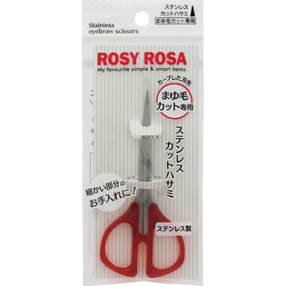
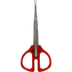

返回列表
产品名称：ロージーローザ ステンレスカットハサミ

シャンテイ ロージーローザ ステンレスカットハサミ ＿
メーカー シャンテイ
JANコード 4901604450528
商品の特徴
まゆ毛カット専用
ほどよくカーブした刃先でまゆ毛の細かい部分のお手入れに
ステンレス製なのでサビに強く切れ味抜群！
成分・分量
【材質】
本体／ステンレススチール
ハンドル部／アクリル樹脂
キャップ部／ＰＰ
用法及び用量
【使用方法】
１．周りの安全を確認し、手元に鏡を置き、安定した姿勢でお手入れを始めてください。
２．理想の眉ラインからはみ出した余分なまゆ毛を根元からカットします。
３．眉用のコームでまゆ毛を起こし、長さをそろえるように長い毛をカットします。